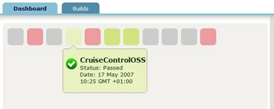
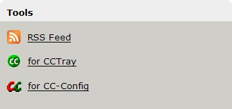
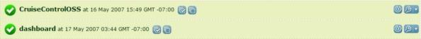
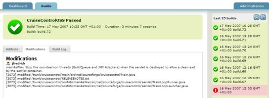
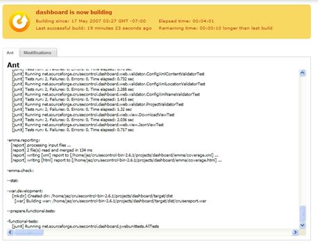
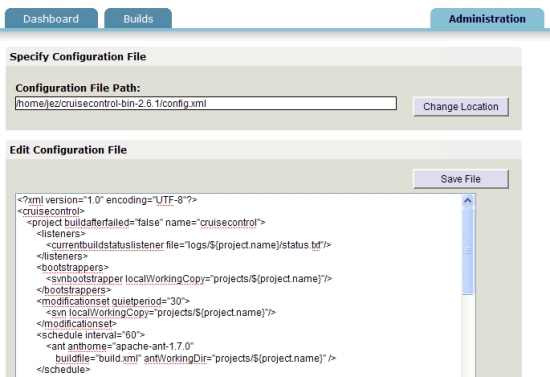

Dashboard
What is the CruiseControl Dashboard?
The CruiseControl Dashboard is a powerful tool to help you visualise your project statuses. Previous project build result is colour-coded so that you can get an instant snapshot of how your projects are doing instantly. The build results are overlayed with icons showing the current status of the project (for example paused, queued or building).

When you place your mouse over the project builds, represented by the colored squares, you can see more information on that project, such as the project name, the server the project is running on, and when the last build occurred.
What do the squares mean?
In general, the squares will either have green or red as the background color. A red background indicates that the last build failed, while a green background indicates that it passed. The longer the build has been in its current state, the darker the colour will be. The exception is projects that are building - these will be green if the project passed last time it built, and orange if the project failed last time.
Here are some examples of the kinds of status you are likely to see. Many more combinations are possible, but you should have no problem deducing them from the examples below
- This indicates a project build has been successful for more than 24 hours, and is currently in the queue waiting to build.
- This indicates a project build has been successful for less than 24 hours.
- This indicates a project build that has failed for more than 24 hours.
- This indicates a project build that has failed for less than 24 hours and is currently paused.
- This indicates a project that passed last time it ran and is currently building.
- This indicates an inactive or discontinued project*.
* Inactive projects are ones that are defined in CruiseControl's configuration file but have never been built (in other words, CruiseControl can't find any logs corresponding to this project). A discontinued build is one that has log files from previous builds, but is not defined in CruiseControl's configuration file.
Here is a list of actions you can perform: access the RSS feed to the project build, the XML feed for CCTray, and the CruiseControl JMX console.

Builds page

This is the build page. It enables you to look at each project build and its status. You can perform the following actions on each project build:
- View all successful builds
- View all builds
- Force build
- Access each individual project build's RSS feed and the CruiseControl JMX console
Build Detail Page

The build detail page contains project build information such as the last successful build, build number, duration of the build and the last 25 builds.
Build Detail Page For Building Project

This is the build detail page for a project that is currently building. Whilst the project is building, the build output is displayed on-screen.
Administration Page

On this page you can see details about the configuration of the dashboard, such as which build it is, the type of OS and version of the JVM it is running on. By clicking in the "configuration" sub-tab, you can see where the dashboard is reading its configuration from, and the contents of its configuration file.
Limitations of the dashboard
There are known limitations of the dashboard. They are:
- If you remove a project's log files, the dashboard won't automatically discover this and mark the project inactive. You need to refresh the page in the browser first. Note also that if you delete a project's log folder, CruiseControl won't re-create it unless you restart CruiseControl.
- If you remove a project from CruiseControl's config.xml file, the dashboard won't automatically discover this and mark the project discontinued. You need to refresh the page in the browser first.
- Although the build loop will automatically pick up changes made to config.xml, the dashboard won't pick up changes when you change dashboard-config.xml. You'll need to restart the dashboard for these changes to take effect.
Installation guide
There are three ways you can configure the dashboard. In order of precedence (highest first), they are:
- web.xml of your J2EE server. This is deprecated, since you will have to unpack the distribution in order to edit this file.
- dashboard-config.xml. This is the preferred way to configure the dashboard. A default dashboard-config.xml file is distributed with CruiseControl, and lives in the same place as the config.xml file used to configure the build loop.
- system properties. You can use system properties to override the settings in the configuration files -- see below.
System property
Administrators can pass system properties through cruisecontrol.sh/cruisecontrol.bat or the startup script of the web container.
| Property | Value | Default Value | Description |
|---|---|---|---|
| cc.config.forcebuild | enabled/disabled | enabled | whether users can force a build from gui |
| cc.logdir | String | logs | Used to specify the full path to your CruiseControl logs directory. |
| cc.artifacts | String | artifacts | Used to specify the full path to your CruiseControl artifacts directory. |
| dashboard.config | String | dashboard-config.xml | Used to specify the full path to the dashboard configuration file. |
Dashboard Configuration File
By default Dashboard uses dashboard-config.xml, which is found in the CruiseControl installation directory. The administrator can specify the location of the dashboard configuration file in cruisecontronl.sh/cruisecontrol.bat by setting the value of the dashboard.config system property.
<buildloop>
<dashboard>
<buildloop>
The <buildloop> tag is used to specify properties related to cruisecontrol build loop.
Attributes
| Attribute | Description |
|---|---|
| logsdir | This should be the full path to your CruiseControl logs directory. |
| artifactsdir | This should be the full path to your CruiseControl artifacts directory. |
<features>
<dashboard>
<features>
The <features> tag is used to specify properties which customize the behaviour of the dashboard.
Attributes
| Attribute | Description |
|---|---|
| allowforcebuild | whether users can force a build from the GUI. true or false. |
<trackingtool>
<dashboard>
<trackingtool>
The <trackingtool> tag is used to specify properties which can be used to create hyperlinks from commit comments to project management tools. Each of your projects can have zero or one <trackingtool>s
The dashboard will parse your commit message to find the story number which follows the keywords specified, and will generate a hyperlink using the baseurl you define and the story number.
For example: If you check in source code with message "I fixed bug #425" and define your <trackingtool> as below:
<trackingtool projectname="cc" baseurl="http://mingle05/projects/ccee/cards/" keywords="#,build"/>
Then the dashboard will create the hyperlink "<a href=http://mingle05/projects/ccee/cards/425>I fixed bug #425</a>" for the commit message.Attributes
| Attribute | Description |
|---|---|
| projectname | Your project name in cruisecontrol. |
| baseurl | The base url of your project in project management tool |
| keywords | The keywords to look for in your commit message, comma separated. |
<subtabs> (deprecated)
<dashboard>
<subtabs>
The <subtabs> tag is used to specify widget plug-ins for the build detail page. You can have zero or one subtabs tags, which can contain any number of <subtab> tags.
Note that the dashboard widget API is deprecated and will be replaced in a future version of CruiseControl. We strongly recommend developers do not create widgets using this API, as it will not be supported in the future.
Example:
<subtabs> <subtab class="net.sourceforge.cruisecontrol.dashboard.widgets.ErrorsAndWarningsMessagesWidget" /> </subtabs>
Context parameter (Deprecated. Use System Property or Dashboard configuration file instead.)
Administrators can manually edit the web.xml to configure the dashboard application.
| Property | Value | Default Value | Description |
|---|---|---|---|
| cruisecontrol.config.forcebuild | enabled/disabled | enabled | whether users can force a build from gui |
| cruisecontrol.logdir | String | logs | This should be the full path to your CruiseControl logs directory. |
| cruisecontrol.artifacts | String | artifacts | This should be the full path to your CruiseControl artifacts directory. |